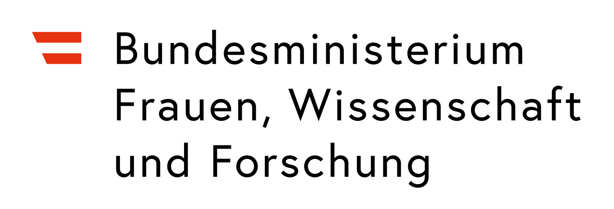

Jeder Klick, den du in sozialen Netzwerken machst, erzählt der KI ein bisschen mehr über dich. Deine Likes, Kommentare und Shares formen, was sie über deine Interessen weiß!
Du wirst mit 20 verschiedenen Inhalten interagieren, so wie du es auf deinem Handy tun würdest.
